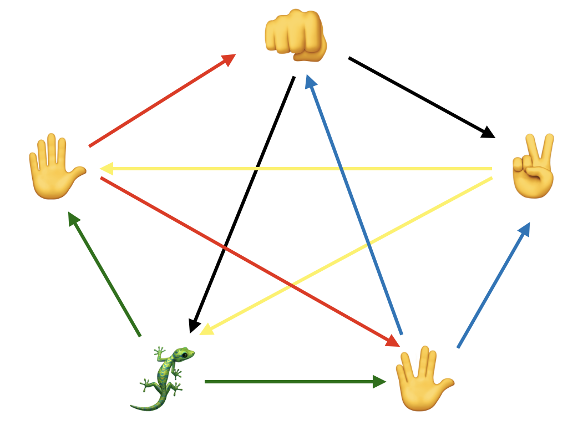

ゲームの概要
普通のじゃんけんでは物足りないと感じているあなたにとっておきのゲーム！
このゲームでは通常の「👊」・「✌️」・「✋」に加えて、
「🦎(トカゲ)」・「🖖(スポック)」の2手が追加された新感覚じゃんけん！
「🦎(トカゲ)」・「🖖(スポック)」の2手が追加された新感覚じゃんけん！
このゲームはアメリカのKass氏(ソフトウェアエンジニア)・Karen Bryla氏(ウェブデベロッパー)が作ったもの。
2008年に放映されたアメリカのテレビドラマ「The Big Bang Theory」で紹介され、一躍有名になった。
2008年に放映されたアメリカのテレビドラマ「The Big Bang Theory」で紹介され、一躍有名になった。
2手増えるだけで勝ち負けのパターンが3通り→10通りに！
このチャレンジングなゲームにあなたもぜひ挑戦してみてください！
このチャレンジングなゲームにあなたもぜひ挑戦してみてください！
ゲームのルール
各手の力関係は以下の通り。
矢印が向いている手に対して勝利する形です。
;
矢印が向いている手に対して勝利する形です。
一見かなりややこしいですが、ポイントは「各手が2手に勝ち、2手に負けること」です。
最後に...
このゲームが知られるきっかけとなった「Big Bang Theory」の主人公Sheldonが
ゲームのルールを説明するシーンをご紹介します！
ゲームのルールを説明するシーンをご紹介します！
天才物理学者Sheldonならではの"Geek"感をご堪能ください！